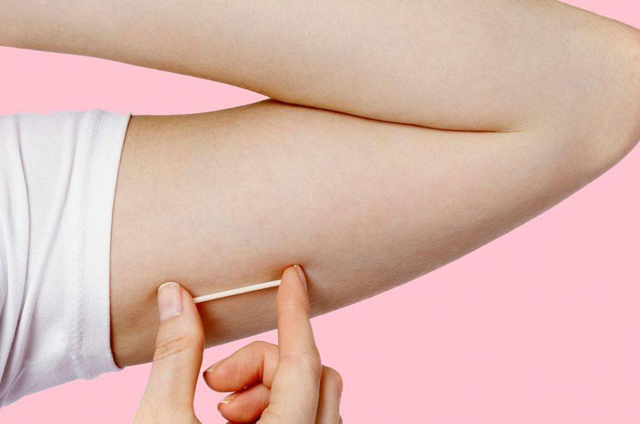
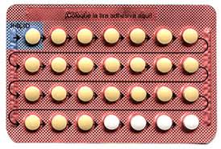
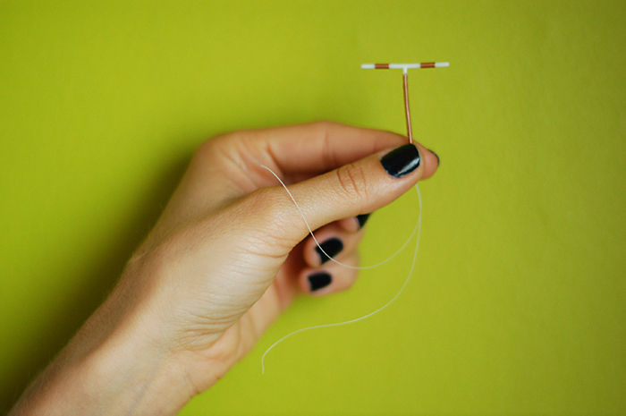
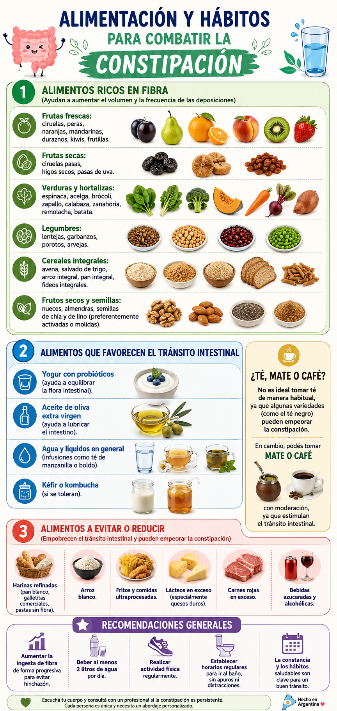
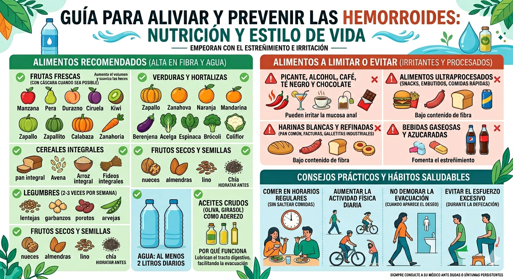
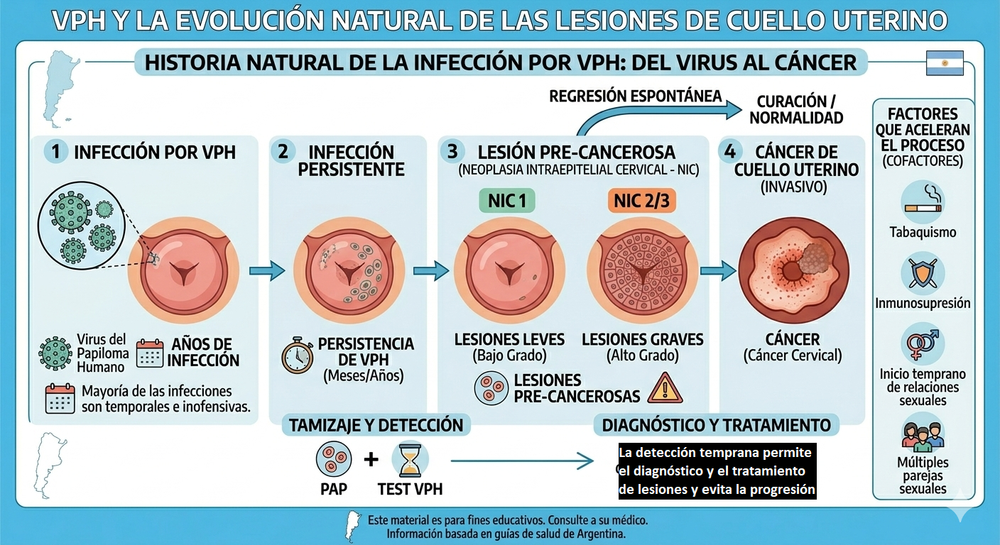
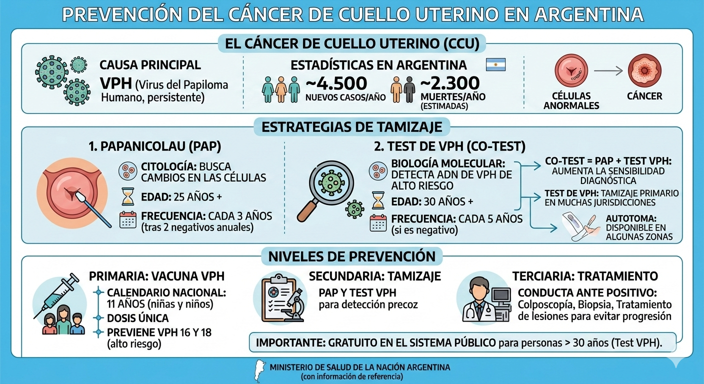
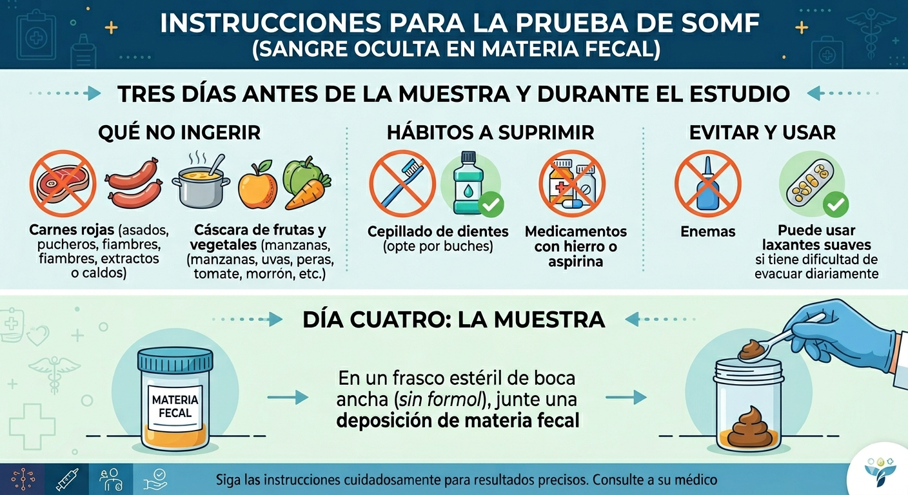

Métodos Anticonceptivos

🩹 ¿Qué cuidados hay que tener los primeros días?
Es importante mantener limpia la zona con agua y jabón. Es habitual que aparezca un área de pequeños hematomas o enrojecimiento. Si el enrojecimiento persiste, hay aumento de temperatura o dolor, consultar al equipo de salud.
😣 ¿El implante produce dolor?
Se puede sentir una pequeña molestia o picazón por la anestesia, que desaparece a las pocas horas.
⏱️ ¿Cuándo es seguro para evitar un embarazo?
Luego de 7 días de colocado. Se recomienda usar preservativo la primera semana.
⏳ ¿Cuánto tiempo dura el efecto?
Los implantes que se colocan en la Argentina duran 5 años.
🩺 ¿Hay que controlarlo? ¿Cuándo?
Se realiza un control después de la colocación y luego según lo recomendado por el equipo de salud.
🖐️ ¿Es posible saber si el implante está en su lugar?
En general no se ve, pero es posible sentirlo al pasar suavemente la mano por la zona. Si se sospecha que no está, consultar al equipo de salud.
🩸 ¿Cómo y cuándo vendrá el sangrado?
Al comienzo puede ser irregular. Por lo general, luego de algunos meses disminuye hasta desaparecer. La ausencia de sangrado no afecta la salud.
⚠️ Si hay sangrado irregular, ¿qué hay que hacer?
Es habitual los primeros meses. Suele regularizarse después del primer año. Si persiste acompañado de molestias o es muy abundante, consultar al equipo de salud.
💊 ¿Qué pasa si hay que tomar otros medicamentos?
Es importante avisar al médico/a. Algunos medicamentos para tuberculosis, VIH y algunos anticonvulsivantes pueden disminuir la seguridad del implante.
🤔 ¿Tiene efectos molestos?
Cambios en el sangrado, dolor de cabeza, malestar en las mamas, cambios de humor, variaciones de peso y acné. La mayoría disminuyen en los primeros meses. Si son muy intensos, consultar.
🔙 ¿Cuándo se retira el implante?
Durante los primeros 5 años, el implante puede retirarse en el momento que la persona desee. Siempre por personal capacitado. La fertilidad se recupera inmediatamente.
Ante cualquier duda, acercarse al centro de salud.

📅 ¿Cuándo aplicar la primera inyección?
Se recomienda el primer día de la menstruación. Si se comienza en otro momento, usar preservativo por 7 días. Luego de un aborto, puede iniciarse inmediatamente.
🔄 ¿Cómo continuar con la aplicación?
Aplicar una inyección cada 30 días, en la misma fecha. No importa cuántos días tenga el mes.
Marcá la fecha en un calendario, anotala en la agenda o poné una alarma en el teléfono.
Si pasaron MÁS de 7 días de la fecha indicada, el método deja de tener efecto y hay riesgo de embarazo. Si hubo relaciones con penetración, tomar anticoncepción de emergencia, usar preservativo y consultar para reiniciar el método.
🩸 ¿Cuándo vendrá el sangrado y cómo?
Entre los 15 y 25 días de aplicada, puede ser de menor cantidad, sangre más oscura y menos doloroso. Con el tiempo puede disminuir o desaparecer. La sangre no se acumula en el cuerpo.
🤔 Ya es la fecha pero no tuve sangrado, ¿está bien?
Sí. Si la aplicación fue en las fechas indicadas, sigue siendo segura. La falta de sangrado no representa ningún riesgo para la salud.
🩸 Si todavía tengo sangrado en la fecha de la inyección, ¿qué hago?
Aplicar la inyección en la fecha que corresponde, sin importar si continúa el sangrado.
💉 ¿Dónde y cómo se aplica?
En centro de salud, hospital o farmacia por personal capacitado. Es intramuscular (brazo o glúteo). No masajear la zona luego de la aplicación.
🌡️ Conservación de las ampollas
Guardar a temperatura ambiente (NO en la heladera ni cerca de fuentes de calor).
💊 Interacción con otros medicamentos
Avisar al equipo de salud. Algunos medicamentos para tuberculosis, VIH y anticonvulsivantes pueden disminuir la seguridad de la inyección. Ante la duda, no interrumpir la aplicación y consultar.
🤔 ¿Tiene efectos molestos?
Cambios en el sangrado (irregular los primeros 3 meses, luego ausencia), aumento de peso, dolor de cabeza, mareos y dolor en las mamas. Si son intensos o prolongados, consultar.
📅 ¿Cuándo aplicar la primera inyección?
Se recomienda iniciar el primer día del ciclo menstrual. Si se comienza en otro momento, usar preservativo por 7 días. Puede administrarse inmediatamente post aborto.
- 🤱 Si se está amamantando: Se recomienda comenzar después de las 6 semanas post parto (salvo indicación médica).
- 🍼 Si NO se está amamantando: Puede iniciarse inmediatamente.
🔄 ¿Cómo continuar con la aplicación?
Aplicar una inyección cada 90 días (cada 3 meses), en la misma fecha.
Marcá la fecha en un calendario, anotala en la agenda o poné una alarma en el teléfono.
⏱️ ¿Cuándo es segura para evitar un embarazo?
Si se aplica el primer día del ciclo, es segura desde el inicio. Si se aplica en otro momento, pasan 7 días (usar preservativo de respaldo durante ese tiempo).
⚠️ ¿Qué pasa si no se aplica en esa fecha exacta?
Se puede aplicar entre 2 semanas antes y 4 semanas después de la fecha habitual, sin perder efecto. Sin embargo, por seguridad, es preferible no pasarse de las 2 semanas.
Si pasaron MÁS de 4 semanas de la fecha de aplicación, el método deja de tener efecto y hay riesgo de embarazo. Si hubo relaciones sin preservativo, tomar anticoncepción de emergencia, usar preservativo y consultar para reiniciar el método.
🩸 ¿Cómo y cuándo será el sangrado?
Luego de la primera aplicación puede ser más abundante y prolongado. Con el tiempo suele producirse amenorrea (falta de sangrado). La sangre no se acumula en el cuerpo y no representa riesgo para la salud.
🤔 Ya es la fecha pero no llegó el sangrado, ¿está bien?
Sí. Si la aplicación fue en las fechas indicadas, sigue siendo segura. Consultar ante cualquier duda.
🩸 Si todavía tengo sangrado en la fecha de la inyección, ¿qué hago?
Aplicar la inyección en la fecha que corresponde, sin importar si aún continúa el sangrado.
💉 ¿Dónde y cómo se aplica?
En centro de salud, hospital o farmacia por personal capacitado. Es intramuscular (brazo o glúteo). No masajear la zona luego de la aplicación.
🌡️ ¿Cómo hay que conservar las ampollas?
Guardar a temperatura ambiente (NO en la heladera ni cerca de fuentes de calor).
🩺 ¿Hay que realizar algún control o estudio?
Se recomienda controlar la presión arterial una vez al año.
💊 Interacción con otros medicamentos
✅ La efectividad de este método NO se ve afectada por el uso de otros medicamentos, y su uso no modifica la acción de otras medicaciones.
🤔 ¿Tiene efectos molestos?
Irregularidades en el sangrado los primeros meses y luego falta de sangrado. También puede haber: dolor de cabeza, aumento de peso, mareos, distensión abdominal, cambios de humor y en el deseo sexual. Nota: Produce pérdida de densidad ósea que se recupera al dejar de usarla en mujeres en edad fértil.

💊 ¿Cuándo se empieza a tomar la primera pastilla?
Se recomienda iniciar el primer día de la menstruación. Si se comienza en otro momento o en ausencia de menstruación, es necesario usar preservativo u otro método de respaldo los primeros 7 días. Luego de un aborto, se puede comenzar inmediatamente.
🔢 ¿Por cuál pastilla se empieza?
Todas las pastillas son iguales. Empezar por la que dice el día de la semana en el que se comienza, y luego seguir las flechas. Recordar ese día, ya que las siguientes cajas se comenzarán ese mismo día de la semana.
⏰ ¿Cómo se toman las pastillas?
Tomar una pastilla por día siempre en el mismo horario durante 21 días (3 semanas). Luego, durante los 7 días siguientes (una semana), no se toma la pastilla. Al octavo día se reinicia un nuevo envase (aunque continúe el sangrado). Nunca hay que estar más de 7 días sin tomar pastillas.
Poné una alarma en el teléfono o asociá la toma a prácticas cotidianas (como lavarte los dientes) para no olvidarte.
🛡️ ¿Cuándo son seguras para evitar un embarazo?
Si se inició el primer día del ciclo, son seguras desde el comienzo. Si se inició en otro momento, son seguras luego de 7 días de toma adecuada (usar preservativo esa primera semana).
🩸 ¿Cuándo vendrá el sangrado y cómo?
Aparece en la semana en que no se toman pastillas. No es una menstruación (las pastillas inhiben la ovulación). Es de menor cantidad, sangre más oscura y menos doloroso.
⚠️ ¿Sangrados irregulares al comienzo?
Al comienzo puede presentarse sangrado fuera de la semana de descanso. Esto suele ser normal y deja de pasar a los 2 o 3 meses. Seguir tomando las pastillas todos los días a la misma hora. Si continúa, es muy abundante o hay otras molestias, consultar al equipo de salud.
🤢 ¿Qué hacer en caso de vómitos?
- Menos de 4 horas después de la toma: Tomar otra pastilla lo antes posible y continuar en el horario de siempre. Esa caja se terminará un día antes.
- Más de 4 horas después de la toma: Siguen siendo seguras, no hace falta tomar otra pastilla.
Seguir tomando la pastilla como siempre. Sin embargo, mientras dure la diarrea y durante los 7 días posteriores a que se vayan los síntomas, usar preservativo obligatoriamente.
💊 ¿Se pueden tomar otros medicamentos?
Avisar al médico/a. Algunos medicamentos para tuberculosis, VIH y anticonvulsivantes pueden disminuir la seguridad. Ante la duda, no interrumpir la toma y sumar el preservativo.
🤔 ¿Tiene efectos molestos?
La mayoría disminuyen o desaparecen en los primeros meses. Pueden causar: sangrado irregular, ausencia de sangrado, dolores de cabeza, cambios de humor, cambios en el deseo sexual, dolor mamario, dolor abdominal o náuseas. Si son intensos y persistentes, consultar.
📅 ¿Hay que suspender las pastillas luego de varios años?
No. Se pueden tomar durante muchos años seguidos sin que afecte la salud. Solo es necesario realizar un control anual de la tensión arterial.
🛑 ¿Cómo dejar de tomar las pastillas?
Se recomienda hacerlo al terminar la caja para evitar irregularidades en el sangrado. La fertilidad se recupera inmediatamente, por lo cual es importante usar otro método si se quiere evitar un embarazo.
1. Tomar todos los días a la misma hora.
2. Al terminar un envase, hacer una pausa de SOLO 7 días y luego comenzar la siguiente caja.
3. Acercarse al centro de salud para retirar más cajas con tiempo.
ANTE CUALQUIER DUDA, ACERCARSE AL CENTRO DE SALUD
🚨 GUÍA DE OLVIDOS
🔹 Olvido de UNA SOLA pastilla
Tomar la pastilla olvidada lo antes posible y continuar con las siguientes en el horario de siempre. Siguen siendo seguras.
🔹 Olvido de DOS o MÁS pastillas
Tomar la última pastilla olvidada lo antes posible (aunque signifique tomar dos juntas) y continuar en el horario habitual. Usar preservativo durante los siguientes 7 días.
- Si pasó en la PRIMERA semana (pastillas 1 a 7): Además de lo anterior, si hubo relaciones con penetración sin preservativo en los últimos 7 días, tomar anticoncepción de emergencia ("pastilla del día después").
- Si pasó en la SEGUNDA semana (pastillas 8 a 14): Usar preservativo por 7 días. No se requiere anticoncepción de emergencia si se tomaron bien las de la semana 1.
- Si pasó en la TERCERA semana (pastillas 15 a 21): Terminar de tomar toda la caja e iniciar una caja nueva sin hacer la pausa de los 7 días. No aparecerá sangrado en la fecha esperada (puede haber sangrado escaso, no afecta la salud). Usar preservativo por 7 días.

💊 ¿Cuándo se empieza a tomar la primera pastilla?
Se empiezan a tomar el primer día de la menstruación. Si se comienza en otro momento o en ausencia de menstruación, es necesario usar preservativo los primeros 7 días. Luego de un aborto, se puede comenzar inmediatamente.
- 🤱 Si se está amamantando: Empezar a tomar las pastillas 6 semanas después del parto o en la fecha indicada por el equipo de salud.
- 🍼 Si NO se está amamantando: Hay que empezar a tomar las pastillas al momento del alta.
🔢 ¿Por cuál pastilla se empieza?
Todas las pastillas son iguales. Hay que empezar por la que dice el día de la semana en que se toma la primera pastilla, y luego seguir las flechas.
⏰ ¿Cómo se toman las pastillas?
Tomar una pastilla por día siempre en el mismo horario. Al terminar la caja comenzar una nueva. NO hay que hacer pausa entre una caja y la otra.
Poné una alarma en el teléfono, asociá la toma a prácticas cotidianas (como lavarte los dientes) o buscá otra estrategia que se acomode a tu rutina personal.
🛡️ ¿Cuándo son seguras para evitar un embarazo?
Si se toman desde el primer día de la menstruación, son efectivas desde el inicio. Si se inicia en otro momento, hay que esperar 7 días (usar preservativo esa primera semana). Si se inicia durante las primeras 6 semanas post parto y se está con lactancia exclusiva, no es necesario el uso de preservativo.
🩸 ¿Es una menstruación lo que aparece?
No es una menstruación porque las pastillas inhiben la ovulación. Se produce un sangrado parecido, más irregular, de menor cantidad, con sangre más oscura y menos doloroso. Con el tiempo puede desaparecer sin que esto signifique ningún riesgo para la salud.
🤔 Se está terminando la caja y todavía no aparece el sangrado, ¿está bien?
Sí. Luego de un tiempo de tomarlas, el sangrado va disminuyendo hasta incluso desaparecer. Si se tomaron bien las pastillas, la protección continúa. La falta de sangrado no representa ningún riesgo para la salud. La sangre no se acumula en el cuerpo.
🤢 ¿Qué hacer en caso de vómitos?
- Menos de 4 horas después de la toma: Hay que tomar otra pastilla lo antes posible y continuar con las siguientes en el horario de siempre.
- Más de 4 horas después de la toma: Siguen siendo seguras.
Seguir tomando la pastilla como siempre. Sin embargo, mientras dure la diarrea y durante los 7 días posteriores a que se vayan los síntomas, usar preservativo obligatoriamente.
💊 ¿Se pueden tomar otros medicamentos?
Avisar al equipo de salud. Algunos medicamentos para tuberculosis, VIH y anticonvulsivantes pueden disminuir la seguridad de la pastilla. Ante la duda, no interrumpir la toma y sumar el preservativo para mayor cuidado.
🤔 ¿Tiene efectos molestos?
Son poco frecuentes. Pueden causar dolores de cabeza, cambios de humor, cambios en el deseo sexual, dolor mamario, dolor abdominal o náuseas. La mayoría disminuye o desaparece en los primeros meses. Si son muy intensos, consultar al equipo de salud.
🚨 GUÍA DE OLVIDOS
🔹 Si pasaron MENOS de 12 horas
Tomar la pastilla olvidada lo antes posible y continuar con las siguientes en el horario de siempre. Siguen siendo seguras.
1. Tomar la pastilla olvidada lo antes posible (aunque haya que tomar dos juntas) y continuar en el horario de siempre.
2. Usar preservativo durante 7 días.
3. Si durante esos 7 días posteriores al olvido se tuvieron relaciones sexuales con penetración sin preservativo, tomar además anticoncepción de emergencia ("pastilla del día después") lo antes posible.
• Tomar las pastillas todos los días a la misma hora.
• Al terminar la caja, comenzar otra al día siguiente SIN hacer ninguna pausa.
• Puede haber sangrado irregular o ausencia de sangrado, sin que esto sea un riesgo. Si fueron bien tomadas, continúa la protección.
• Acercarse al centro de salud para retirar más cajas con tiempo.
Ante cualquier duda, acercarse al centro de salud.

🩹 ¿Qué cuidados hay que tener los primeros días?
Se recomienda no mantener relaciones sexuales con penetración vaginal, no colocar óvulos ni tampones, y no hacer duchas vaginales con bidet ni baños de inmersión por los siguientes 7 días o mientras dure el sangrado.
🤔 ¿Qué se puede esperar los primeros días? ¿Se siente algo diferente?
Si se estaba menstruando: el sangrado puede ser más abundante de lo habitual, puede haber sangrado entre las menstruaciones y es posible que se sientan molestias abdominales. Esto es normal y esperable.
Si no se estaba menstruando: puede aparecer un sangrado leve a moderado, dolores o molestias abdominales y flujo un poco más abundante.
Si los dolores o el sangrado son muy intensos, consultar al equipo de salud.
⏱️ Desde que se coloca el DIU, ¿cuándo es seguro para evitar un embarazo?
El DIU evita embarazos desde su colocación, si esta es exitosa. Se recomienda el uso de otro método anticonceptivo de respaldo hasta el primer control para asegurarse de que la colocación haya sido correcta.
⏳ ¿Cuánto tiempo dura el efecto anticonceptivo del DIU?
En general duran entre 5 y 10 años, dependiendo del modelo utilizado.
🩺 ¿Hay que controlarlo? ¿Cuándo?
En general, se realiza un control a los 7 días de la colocación. Otro, después de la primera menstruación, y cada 6 meses o un año, según lo recomendado por el equipo de salud.
🔍 ¿Cómo son los controles?
En general, es suficiente hacer un examen ginecológico con espéculo para ver los hilos. También se puede hacer el control con ecografía, pero esto no es indispensable.
🖐️ ¿Es posible saber si el DIU está en su lugar?
Sí, con controles médicos o con ecografía. También es posible tocarse los hilos introduciendo uno o dos dedos hasta el fondo de la vagina, teniendo mucho cuidado de no tirar de ellos.
🩸 ¿Cuándo vendrá la menstruación y cómo?
Las menstruaciones seguirán su ritmo habitual, es posible que sean de mayor cantidad y duren más días. Pueden ser un poco más dolorosas que antes (esto suele ceder con analgésicos comunes como ibuprofeno). Los primeros meses, puede haber un pequeño sangrado entre las menstruaciones.
💑 ¿Se sienten los hilos al mantener relaciones sexuales?
Es muy poco probable que se sientan los hilos o que molesten durante la relación. Si esto llegara a pasar, consultar al equipo de salud, ya que pueden acortarse.
📋 ¿Puede hacerse el PAP (Papanicolaou) con el DIU?
Sí, no hay ningún problema. Es conveniente aprovechar el control del DIU para realizarse el PAP en el momento indicado por el equipo de salud.
🤱 ¿Qué tener en cuenta si el DIU fue colocado luego del parto o cesárea?
Si se colocó en forma inmediata (hasta 48 horas después) del parto o cesárea, hay que tener en cuenta:
- Que pueden aparecer los hilos del DIU a través de la vagina. Esto es normal. Es importante no tirar de los hilos y concurrir a una guardia de obstetricia o al centro de salud para que un/a profesional los controle y recorte.
- Hasta que concurra al control y se verifique que el DIU está correctamente ubicado, es necesario utilizar otro método anticonceptivo de respaldo (como anticonceptivos orales para la lactancia o preservativo).
- A los 30 días de la colocación debe asistir a un control para verificar que el DIU siga bien colocado.
• Flujo con mal olor
• Dolor intenso o en aumento en la parte baja del abdomen
• Pérdida de sangre abundante por la vagina
• Picazón, molestias o dolor en la vulva o la vagina
• Molestias durante las relaciones sexuales
• Falta de menstruación (sospecha de embarazo)
🍎 Alimentación en Diabetes e Hipertensión
Si tenés diabetes tipo 2 y/o presión alta, la alimentación es una de las herramientas más poderosas que tenés. Comer bien puede bajar tu azúcar promedio (hemoglobina glicosilada) entre un 1% y un 2%, y reducir tu presión arterial tanto como algunos medicamentos. ¡Tu plato es tu aliado!
🍽️ El método del plato saludable
Una forma fácil de organizar tus comidas sin pesar nada es usar el "método del plato". En cada comida principal (almuerzo y cena), armá tu plato así:
• La mitad (½): Verduras de todos los colores (crudas o cocidas).
• Un cuarto (¼): Carnes magras, pollo sin piel, pescado o huevo.
• Un cuarto (¼): Legumbres (lentejas, porotos, garbanzos) o cereales integrales (arroz integral, avena, pan integral).
🕐 Realizá 4 comidas al día (desayuno, almuerzo, merienda y cena) para mantener tu azúcar estable y evitar los "bajones" o el picoteo.
🚦 Semáforo de alimentos
Esta guía te ayuda a elegir alimentos que cuidan tu azúcar y tu presión al mismo tiempo.
| 🟢 Recomendados | 🟡 Con moderación | 🔴 Evitar o limitar mucho |
|---|---|---|
| Agua segura (8 vasos/día) | Carnes magras (peceto, nalga, pollo sin piel) | Sal de mesa y salero en la mesa |
| Verduras frescas (hoja verde, brócoli, tomate, zanahoria) | Lácteos descremados (leche, yogur, queso blanco) | Ultraprocesados (galletitas, snacks, copetín) |
| Frutas enteras con cáscara | Huevo (sin frituras) | Gaseosas, aguas saborizadas, jugos en caja |
| Legumbres (lentejas, porotos, garbanzos) | Papa, batata, choclo, mandioca (hervidos y fríos preferentemente) | Embutidos (jamón, salame, salchichas, morcillas) |
| Cereales integrales (avena, arroz integral, pan integral) | Edulcorantes (para endulzar infusiones) | Facturas, bizcochos, golosinas, amasados |
| Pescado (2 veces por semana, especialmente atún, sardina, merluza) | — | Manteca, margarina, crema, grasas sólidas |
| Aceites vegetales en crudo (oliva, girasol) | — | Caldos en cubito, sopas instantáneas, enlatados |
| Frutos secos sin sal (nueces, almendras, chía) | — | Mayonesa, kétchup, mostaza, salsa de soja |
| Condimentos naturales (ajo, perejil, orégano, limón, pimienta) | — | — |
🧂 La sal: tu enemiga silenciosa
El 70% de la sal que consumimos no viene del salero, sino de los alimentos procesados: caldos en cubito, fiambres, enlatados, snacks, galletitas saladas, sopas instantáneas.
Meta: menos de 1 cucharadita de té de sal por día (5 gramos).
Reemplazá la sal por: ajo, perejil, orégano, pimienta, limón, vinagre, hierbas aromáticas. ¡Tu paladar se acostumbra en 2-3 semanas!
🍬 Azúcares y harinas refinadas
Los azúcares simples (azúcar de mesa, dulces, gaseosas, jugos, facturas) suben tu glucosa muy rápido. Reemplazalos por edulcorantes y elegí siempre la versión integral de pan, arroz y pastas.
🥛 Lácteos y carnes
- 🥛 Lácteos: elegí siempre la versión descremada (leche, yogur, queso blanco). Máximo 3 porciones por día.
- 🍗 Carnes: retirá la grasa visible antes de cocinar. Elegí cortes magros como peceto, nalga, lomo, pollo sin piel.
- 🐟 Pescado: al menos 2 veces por semana, especialmente los de agua fría (atún, sardina, caballa, merluza) por su omega-3 que cuida tu corazón.
🏃 Movimiento que cura
La actividad física es tan efectiva como algunos medicamentos para bajar la presión y mejorar tu azúcar.
• 150 minutos de actividad aeróbica moderada (caminata rápida, bici, natación), en sesiones de al menos 10-30 minutos.
• 2 veces por semana: ejercicios de fuerza (con bandas, pesas livianas o tu propio cuerpo).
⚠️ Precauciones importantes:
- 🚫 Si tenés presión alta: evitá levantar pesos muy pesados sin moverte (isométricos), porque suben la presión bruscamente.
- 🍞 Si tenés diabetes: no hagas ejercicio en ayunas. Si usás insulina, medí tu glucosa antes: si está menor a 100 mg/dL, comé algo con carbohidratos antes de empezar.
- 👟 Calzado: usá zapatos cómodos y medias de algodón (preferentemente blancas, para detectar rápido cualquier lastimadura por el riesgo de pie diabético).
⚖️ Peso, estrés y otros hábitos
📉 Si tenés sobrepeso: bajar apenas un 5% a 10% de tu peso (por ejemplo, 4 a 8 kg si pesás 80 kg) mejora muchísimo tu azúcar y tu presión. Cada kilo que perdés baja aproximadamente 1 punto tu presión arterial.
🧘 Manejá el estrés: 30 a 90 minutos por semana de respiración, meditación o yoga ayudan a "bajar las revoluciones" de tu sistema nervioso y bajan la presión.
Fumar empeora muchísimo la diabetes y la presión, y anula parte del efecto de los medicamentos. Evitá también los ambientes con humo.
🍷 Alcohol: si tomás, limitate a 1 medida por día (mujeres) o 2 (hombres), siempre junto con comida para evitar bajones de azúcar. Nunca antes de conducir o hacer ejercicio.
🦶 Cuidado diario de tus pies
La diabetes puede afectar la sensibilidad de tus pies. Revisalos todos los días en busca de ampollas, grietas o cambios de color.
- 🚿 Lavalos con agua tibia (probá la temperatura con el codo, no con el pie).
- 🧴 Secalos bien, especialmente entre los dedos.
- 🚫 Nunca uses callicidas ni productos químicos para verrugas.
- 🧦 Usá medias de algodón blancas (si hay una lastimadura, se ve la mancha rápido).
📊 Tus metas de salud
Estos son los valores que deberías tratar de mantener, según lo que te indique tu médico:
| 🎯 Qué controlar | ✅ Meta recomendada |
|---|---|
| Presión arterial | Menor a 140/90 (idealmente 130/80 si la tolerás bien) |
| Azúcar promedio (HbA1c) | Cercana al 7% |
| Colesterol | Control anual. Muchas personas con diabetes necesitan medicación (estatinas) para proteger el corazón. |
Ante cualquier duda, acercarse al centro de salud.
📚 Basado en: Guías de Práctica Clínica nacionales y consensos de sociedades científicas (2019-2025) para el manejo conjunto de diabetes mellitus tipo 2 e hipertensión arterial.
Creado por Leandro Antonielli - Mail: leandroantonielli@gmail.com
🦶 Cuidados del Pie diabético

Creación de Milagros Gayoso
Creado por Leandro Antonielli - Mail: leandroantonielli@gmail.com
🏃 Pautas de actividad física generales
📝 Contenido en desarrollo. Próximamente disponible.
Creado por Leandro Antonielli - Mail: leandroantonielli@gmail.com
🥗 Alimentación en situaciones especiales


🧬 Cálculos en la vesícula: qué podés hacer para prevenir los síntomas
Tener cálculos en la vesícula es muy común, pero no todas las personas con cálculos llegan a tener cólicos o complicaciones. La buena noticia es que varios estudios grandes muestran que con algunos cambios en la alimentación, el peso y la actividad física podés reducir de manera importante el riesgo de que los cálculos te den síntomas o requieran cirugía.
✅ ¿Qué conviene comer?
Los estudios coinciden en que seguir una alimentación variada y de buena calidad es la mejor estrategia. No se trata de una dieta especial o restrictiva, sino de un patrón general que incluya:
🟢 Más de esto:
- Frutas y verduras en abundancia
- Legumbres (lentejas, garbanzos, porotos)
- Cereales integrales (avena, arroz integral, pan integral)
- Frutos secos (nueces, almendras)
- Aceite de oliva como grasa principal
- Pescado varias veces por semana
🔴 Menos de esto:
- Azúcares y harinas refinadas (pan blanco, galletitas, gaseosas)
- Comida ultraprocesada y comida rápida
- Frituras y grasas saturadas
Este patrón —similar a la dieta mediterránea— se asocia con menor riesgo de cólicos biliares y de necesitar operación de vesícula (Wang et al., 2022; Wirth et al., 2020; Ahmad et al., 2021).
⚖️ El peso corporal importa, pero bajarlo rápido también es un riesgo
La obesidad es uno de los factores más importantes para desarrollar cálculos sintomáticos. Mantener un peso saludable podría evitar entre el 23% y el 33% de los casos (Wirth et al., 2020; Hamouta et al., 2025).
Sin embargo, bajar de peso muy rápido también puede ser un problema: las dietas muy restrictivas o los cambios bruscos de peso pueden hacer que cálculos que estaban "dormidos" empiecen a dar síntomas (Hamouta et al., 2025; Sawczuk et al., 2024). Por eso se recomienda apuntar a una pérdida gradual, de no más de 1 a 1,5 kg por semana, combinando alimentación saludable con ejercicio.
🏃 El ejercicio también protege
La actividad física regular reduce el riesgo de cólicos biliares y ayuda a compensar los efectos negativos de los cambios de peso. Se estima que en hombres, cerca del 34% de los casos sintomáticos podrían prevenirse con solo 30 minutos de actividad física de moderada intensidad cinco días por semana (Korobka, 2022; Leitzmann et al., 1998).
El sedentarismo —pasar muchas horas sentado, ver mucha televisión, caminar poco— se asocia a mayor riesgo (Sawczuk et al., 2024; Madden et al., 2024).
☕ Otros hábitos que hacen diferencia
- Café: tomar dos o más tazas por día se asocia con menor riesgo de cálculos sintomáticos (Wang et al., 2022; Korobka, 2022). Si no tenés contraindicaciones, es un hábito que no hay que abandonar.
- Tabaco: fumar se asocia con mayor riesgo; no fumar forma parte del estilo de vida protector (Kim et al., 2024; Wirth et al., 2020).
- Alcohol: algunas investigaciones sugieren un efecto protector con consumo moderado, pero no se recomienda beberlo como medida preventiva por los riesgos que trae para la salud en general (Wang et al., 2022; Wirth et al., 2020).
📋 En resumen
| ✅ Qué hacer | ❌ Qué evitar |
|---|---|
| Comer variado: verduras, frutas, legumbres, integrales | Ultraprocesados, azúcares, frituras |
| Mantener un peso saludable | Bajar de peso muy rápido |
| Hacer actividad física regular | Vida sedentaria |
| Tomar café con moderación | Tabaco |
| Aceite de oliva como grasa principal | Grasas saturadas en exceso |
Los cambios de estilo de vida no garantizan que los cálculos desaparezcan, pero sí pueden reducir significativamente las chances de que den síntomas o que sea necesaria una cirugía. Si tenés dudas sobre tu caso particular, consultá con tu médico.
📚 Referencias: Información basada en revisiones científicas publicadas entre 1998 y 2026, incluyendo Wang et al. (2022), Wirth et al. (2020), Hamouta et al. (2025), Kim et al. (2024), Leitzmann et al. (1998), Korobka (2022), Sawczuk et al. (2024) y Madden et al. (2024).

Creado por Leandro Antonielli - Mail: leandroantonielli@gmail.com
🔬 Estudios de control de salud
📝 Contenido en desarrollo. Próximamente disponible.



📝 Contenido en desarrollo. Próximamente disponible.
📝 Contenido en desarrollo. Próximamente disponible.
Creado por Leandro Antonielli - Mail: leandroantonielli@gmail.com